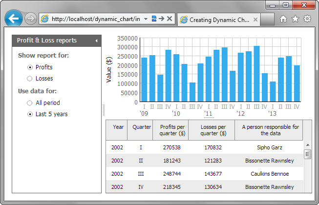

The next dynamic feature is filtering and we will add a possibility to filter input data by years.
We will provide 2 options:
To implement this functionality, we need a little effort:
"data/form.xml" file
<?xml version="1.0"?>
<items>
<item type="settings" position="label-right" offsetLeft="20"
labelWidth="150"/>
<item type="block" width="230" offsetLeft="0">
<item type="label" label="Show report for:" offsetLeft="0"/>
<item type="radio" name="type" value="profits" label="Profits"
checked="true" />
<item type="radio" name="type" value="losses" label="Losses"/>
<item type="label" label="Use data for:" offsetLeft="0"/> <item type="radio" name="filter" value="all_time" label="All period" checked="true"/> <item type="radio" name="filter" value="last5" label="Last 5 years"/> </item>
</items>
"index.html" file
form.attachEvent("onChange", function (id, value, state){
var formValues = form.getFormData();
var field=(formValues.report_type == "profits"?"data2":"data3");
chart.clearAll();
chart.define("value","#"+field+"#");
chart.parse(grid,"dhtmlxgrid");
if (formValues.filter == "last5") { var currentYear = new Date().getFullYear(); //gets the current year chart.filter(function(obj){ //filters the data in the chart return obj.data0 >(currentYear-5); //returns data for last 5 years }) } chart.render();
});

Back to top